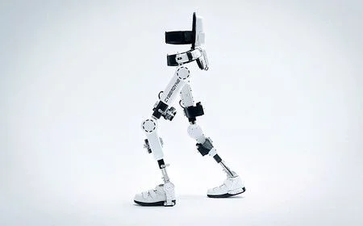

¿Qué es un exoesqueleto robótico?

Un exoesqueleto robótico es un dispositivo mecánico que se ajusta al cuerpo humano y está diseñado para mejorar la fuerza, la movilidad y la resistencia del usuario. Estos dispositivos pueden ser utilizados por personas con discapacidades, aquellos en proceso de rehabilitación, o incluso en entornos industriales y militares.
Un exoesqueleto robótico es un dispositivo mecánico que se ajusta al cuerpo humano y está diseñado para mejorar la fuerza, la movilidad y la resistencia del usuario. Estos dispositivos pueden ser utilizados por personas con discapacidades, aquellos en proceso de rehabilitación, o incluso en entornos industriales y militares.
Tipos de exoesqueletos
- Exoesqueletos asistenciales: Diseñados para ayudar a personas con discapacidades o lesiones. Estos dispositivos pueden proporcionar soporte en la marcha, ayudar en tareas de la vida diaria y mejorar la movilidad general.
- Exoesqueletos industriales: Utilizados en fábricas y entornos de trabajo para ayudar a los trabajadores a levantar y mover cargas pesadas. Estos exoesqueletos reducen el riesgo de lesiones laborales y aumentan la productividad.
- Exoesqueletos militares: Desarrollados para aumentar la capacidad física de los soldados, permitiendo que lleven más equipo y realicen tareas que requieren fuerza física adicional, como el transporte de suministros.
- Exoesqueletos para rehabilitación: Estos exoesqueletos son utilizados en entornos clínicos para ayudar a los pacientes a recuperar la movilidad después de lesiones o cirugías. Proporcionan una manera controlada y segura de rehabilitar la marcha y la movilidad.
Aplicaciones
Los exoesqueletos robóticos tienen muchas aplicaciones. En el ámbito de la medicina y rehabilitación, se utilizan para ayudar a los pacientes a caminar después de lesiones o accidentes. En la industria, se implementan para mejorar la ergonomía en el trabajo, reduciendo la fatiga muscular y ayudando a prevenir lesiones. En el ámbito militar, se han desarrollado exoesqueletos que ayuda a los soldados a transportar cargas pesadas durante operaciones prolongadas, aumentando su resistencia y capacidad de carga. Además, se están explorando usos en deportes, donde algunos exoesqueletos pueden asistir a los atletas en su entrenamiento, mejorando su rendimiento físico.
Beneficios
Los exoesqueletos ofrecen varios beneficios significativos. En primer lugar, mejoran la movilidad y calidad de vida de personas con discapacidades, permitiéndoles participar en actividades cotidianas que antes no podían realizar. En el entorno laboral, ayudan a reducir el riesgo de lesiones, ya que permiten a los trabajadores levantar y mover cargas pesadas de manera más segura y eficiente. Además, los exoesqueletos aumentan la eficiencia en la industria, ya que los trabajadores pueden completar tareas más rápidamente y con menos esfuerzo. Por último, los exoesqueletos impulsan la investigación y desarrollo en campos como la robótica y la biomedicina, lo que ofrece nuevas oportunidades para la innovación y el avance tecnológico.
Evolución
La necesidad de mejorar las capacidades humanas ha existido desde la antigüedad, inventando herramientas como la polea, los carros o las grúas para levantar y transportar cosas pesadas.
El primer dispositivo parecido a los exoesqueletos robóticos fue creado en 1890 por Nicholas Yagn. Este dispositivo utilizaba la energía de bolsas de gas comprimido para ayudar en el movimiento. Años después, en 1917 Leslie C. Kelley creó el podómetro que funcionaba con energía de vapor con ligamentos artificiales que se movían en paralelo con el movimiento humano. Fue en la década de los 1960 que empezaron a crearse máquinas parecidas a los exoesqueletos robóticos. El traje Hardiman creado por General Electric y las Fuerzas armadas de los EEUU. Este traje funcionaba con actuadores hidráulicos y electricos que multiplicaba la fuerza 25 veces. Tenía algunos inconvenientes en comparación con los actuales, pesaba 680kg y funcionaba por respuestas del operador, es decir, que tenía retraso en el tiempo de respuesta, por lo que era poco práctico.
Desde 2010 en adelante, los exoesqueletos robóticos han tenido avances significativos en la miniaturización de componentes y el uso de materiales ligeros. Estos avances han permitido la creación de dispositivos más ligeros y portátiles. La integración de sensores y sistemas de inteligencia artificial ha permitido un control más preciso y una interacción más natural con el usuario.

Podómetro
Hardiman
Exoesqueletos actuales